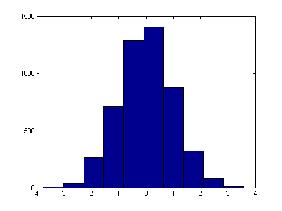
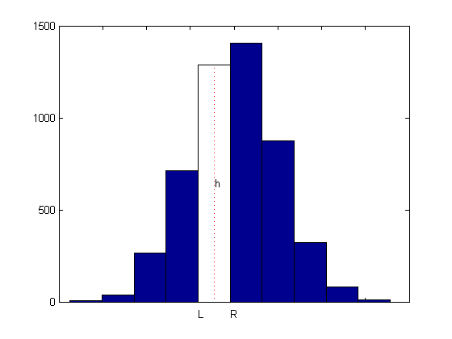
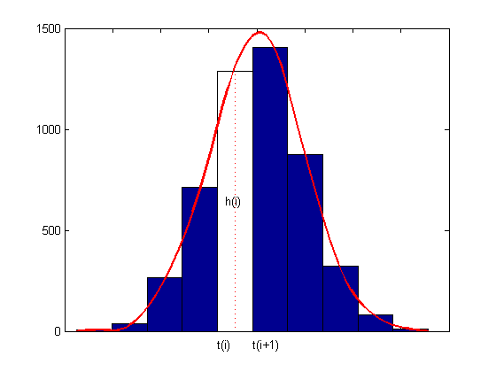

Smoothing a Histogram
Here is a histogram of some random values that might represent data that were collected on some measurement.
y = randn(1,5001); hist(y);
We would like to derive from this histogram a smoother approximation to the underlying distribution. We do this by constructing a spline function f whose average value over each bar interval equals the height of that bar.
If h is the height of one of these bars, and its left and right edges are at L and R, then we want the spline f to satisfy
integral {f(x) : L < x < R}/(R - L) = h,or, with F the indefinite integral of f, i.e., DF = f,
F(R) - F(L) = h*(R - L).
[heights,centers] = hist(y); hold on set(gca,'XTickLabel',[]) n = length(centers); w = centers(2)-centers(1); t = linspace(centers(1)-w/2,centers(end)+w/2,n+1); p = fix(n/2); fill(t([p p p+1 p+1]),[0 heights([p p]),0],'w') plot(centers([p p]),[0 heights(p)],'r:') h = text(centers(p)-.2,heights(p)/2,' h'); dep = -70;tL = text(t(p),dep,'L'); tR = text(t(p+1),dep,'R'); hold off
So, with n the number of bars, t(i) the left edge of the i-th bar, dt(i) its width, and h(i) its height, we want
F(t(i+1)) - F(t(i)) = h(i) * dt(i), for i = 1:n,
or, setting arbitrarily F(t(1)) = 0,
F(t(i)) = sum {h(j)*dt(j) : j=1:i-1}, for i = 1:n+1.dt = diff(t); Fvals = cumsum([0,heights.*dt]);
Add to this the two end conditions DF(t(1)) = 0 = DF(t(n+1)), and we have all the data we need to get F as a complete cubic spline interpolant.
F = spline(t, [0, Fvals, 0]);
The two extra zero values in the second argument indicate the zero endslope conditions.
Finally, the derivative, f = DF, of the spline F is the smoothed version of the histogram.
DF = fnder(F); % computes its first derivative set(h,'String','h(i)') set(tL,'String','t(i)') set(tR,'String','t(i+1)') hold on fnplt(DF, 'r', 2) hold off ylims = ylim; ylim([0,ylims(2)]);